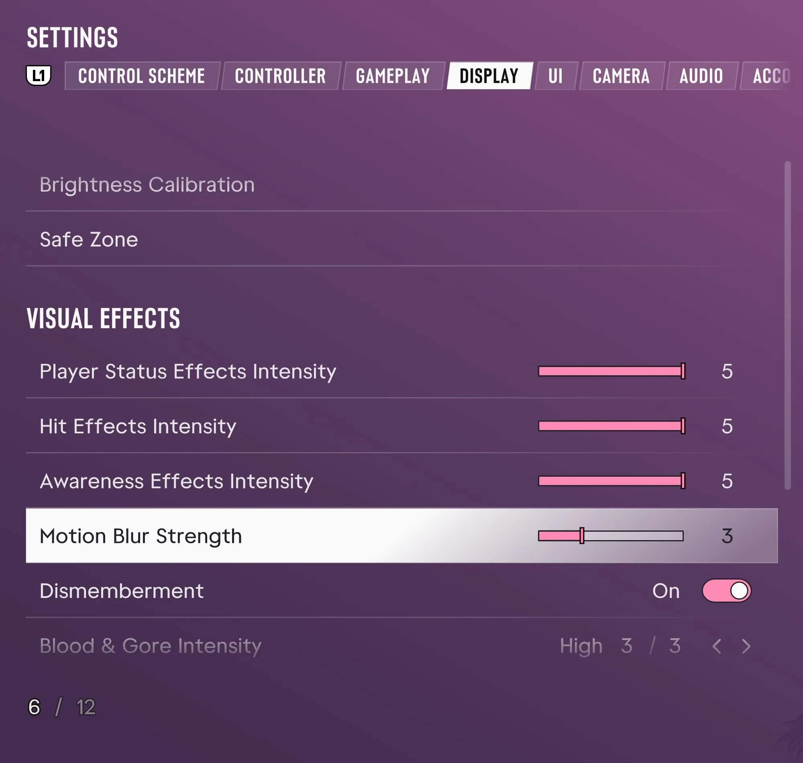

Faça um teste curto antes de mudar as opções
- Gire a câmera parado. Se o incômodo se parece com um rastro atrás de objetos, abra Pausa → Settings → Display e reduza Motion Blur Strength. Teste o mesmo giro mantendo as demais opções.
- Dirija pelo mesmo cruzamento e compare com um trecho vazio. Uma queda que se repete na área movimentada pode corresponder à carga da cena. Os testes de lançamento mostraram variações por modelo e situação.
- Se o jogo congela ou volta para a tela inicial do console, anote a mensagem, a missão e o modelo. Use o passo a passo de inicialização e travamento para conferir atualização e instalação.


O ajuste de desfoque muda a aparência do movimento. A versão de lançamento capturada não oferece um botão de modo 60 fps. Vale testar o modo Jogo da TV separadamente se o comando responde com atraso.